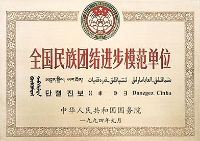
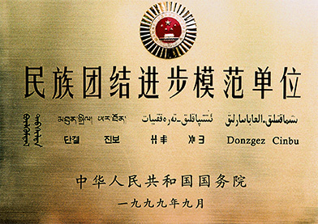
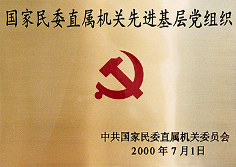

| 1988年4月，中国民族语文翻译局荣获中华人民共和国国务院授予的“全国民族团结进步先进集体”称号。 |  1994年9月，中国民族语文翻译局荣获中华人民共和国国务院授予的“全国民族团结进步模范单位”称号。 | |
|  1999年9月，中国民族语文翻译局荣获中华人民共和国国务院授予的“民族团结进步模范单位”称号。 |  2000年7月，中国民族语文翻译局荣获中共国家民委直属机关委员会授予的“国家民委直属机关先进基层党组织”称号 | |
| 2003年8月，中国民族语文翻译局荣获中共北京市委、市人民政府授予的“首都民族团结进步先进单位”称号。 |
 2003年12月，中国民族语文翻译局荣获中共中央保密委员会办公室、国家保密局授予的“全国先进保密工作集体”称号
2003年12月，中国民族语文翻译局荣获中共中央保密委员会办公室、国家保密局授予的“全国先进保密工作集体”称号
|
|
| 2004年1月，中国民族语文翻译局荣获中央国家机关精神文明建设协调领导小组授予的“中央国家机关文明单位”称号 | 2004年4月，中国民族语文翻译局荣获中央国家机关工会联合会颁发的“中央国家机关五一劳动奖状” | |
| 2009-2011年度五四红旗团组织 | 2010年-2012年度文明单位 | |
| 国家民委惩治和预防腐败体系建设工作(2008-2012)先进集体 | 历年奖牌 |